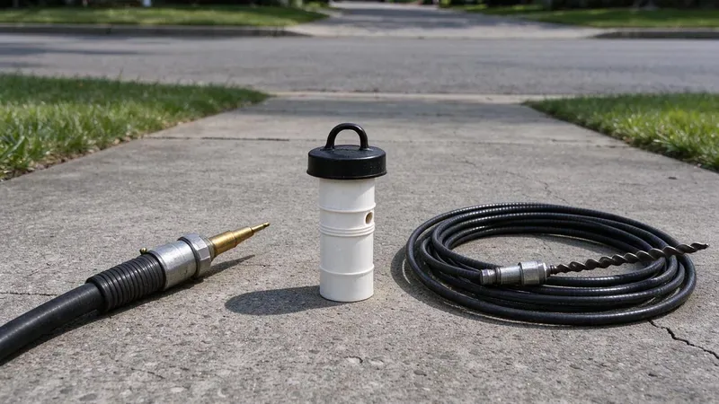

When a drain backs up, most people just want it flowing again. But how a plumber clears the line makes a big difference in how long it stays clear. The two main professional methods are snaking, also called cabling or rodding, and hydro jetting. Each has strengths, each has limits, and the right choice depends on what is actually inside the pipe. Here is how they compare for Oregon homes, where grease, hard water scale and root intrusion are all common culprits.
How Drain Snaking Works
A drain snake is a bendable steel cable that spins as it is fed into the pipe. Small handheld drum augers handle sinks and tubs, while larger sectional or drum machines with 50 to 100 feet of cable get to main sewer lines through a cleanout. The tip of the cable carries a cutting head, such as a spear, a spade or a toothed root cutter, sized to the pipe diameter.
Snaking is very good at punching through a localized blockage. It breaks up wads of paper, retrieves objects like toys or wipes, and chews through small root masses. It is fast, relatively inexpensive and safe on nearly every type of pipe. The catch is that a cable only opens a path roughly the size of its cutting head. Grease coating the walls, scale buildup and the remains of a root ball are often left behind, which is why a snaked line may clog again in a matter of weeks or months.
How Hydro Jetting Works
Hydro jetting uses a purpose-built hose and nozzle to blast water through the pipe at high pressure, typically 3,000 to 4,000 PSI for residential sewer lines. The nozzle has a forward jet to cut through blockages and rear-facing jets that pull the hose along while scouring the pipe walls. Different nozzles handle different jobs, including rotating heads for heavy grease and root-cutting nozzles for root intrusion.
Instead of poking a hole through a clog, jetting restores the pipe close to its full inside diameter. It flushes away grease, soap scum, sludge, sand and the mineral scale that hard water leaves behind. Because it cleans the walls, jetted lines usually stay clear far longer. The tradeoff is cost and the need to confirm the pipe can handle the pressure first.
Soft water can be slightly corrosive, which may lead to pinhole leaks in copper pipe and greenish stains on fixtures.
Comparing the Two Side by Side
These are the key differences homeowners should consider:
- Best use for snaking: single soft clogs, foreign objects, minor root intrusion and fast restoration of flow.
- Best use for jetting: recurring backups, heavy grease in kitchen lines, scale buildup, sand and silt, and heavy root regrowth after cutting.
- Typical cost: snaking a main line often runs $150 to $350, while hydro jetting usually ranges from $350 to $800 depending on length and access.
- How long results last: snaking may need repeating within months, while jetting often keeps a line clear for a year or more.
- Pipe condition: snaking is gentle enough for almost any pipe, while jetting should be preceded by a camera inspection on older or weakened lines.
Why a Camera Inspection Comes First
The smartest drain cleaning starts with a look inside. A sewer camera shows whether the problem is a simple clog, years of grease, a root-filled joint, a sag in the line or a cracked section. That decides the method. Jetting a cracked clay pipe or a badly corroded cast iron line can make damage worse, while snaking a line packed with grease only buys time. In many cases a plumber will snake first to restore flow, run the camera to assess the pipe, then jet to clean it thoroughly. Repeat camera footage after jetting also confirms the line is truly clean and reveals any defects that need repair.
Homes with mature trees near the sewer line often benefit from a maintenance schedule. Cutting roots every year or two, or jetting followed by a root treatment, can hold off a major repair. If roots come back quickly, it usually means a joint is separated, and lining the pipe may be the more cost-effective long-term fix.
When to Call a Professional
If the same drain clogs repeatedly, several fixtures back up at once, or you see water rising out of a floor drain or cleanout, it is time for professional help. JFL Plumbing offers cable drain cleaning, hydro jetting and sewer camera inspections, and we will show you the footage so you can see why we recommend one method over the other. Call (971) 333-7694 to get your drains flowing and keep them that way.
Need a licensed plumber in Oregon?
JFL Plumbing answers 24/7 and offers same-day service across Oregon.